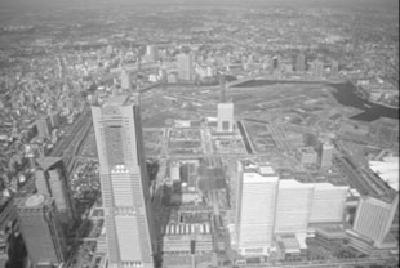

質問
・市営地下鉄が開通したとき、どのような様子だったのか
・1964年のオリンピックはどのような様子だったのか
・1964年のオリンピックは横浜でも盛り上がっていたか
・横浜のいいところはどこか
・横浜以外に住むとすればどこか
・昔の横浜と変わったところはあるのか
・昔の横浜から変わらないところはあるのか
・横浜は将来どのような街になってほしいか
・横浜でよく行く場所はどこなのか
・昔の横浜でよく行っていた場所はどこなのか
記憶装置
